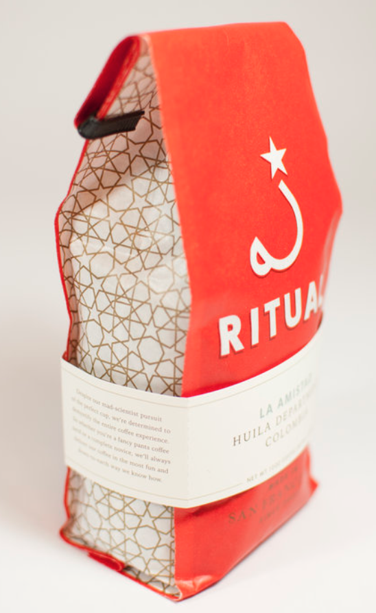

Charleston
A light, fruity blend that has a slight hint of cinnamon.

A light, fruity blend that has a slight hint of cinnamon.
Well-balanced, medium coffee roast that's spicy and fresh.

This fresh blend has a strong citrus fragrance and is high in acidity.
